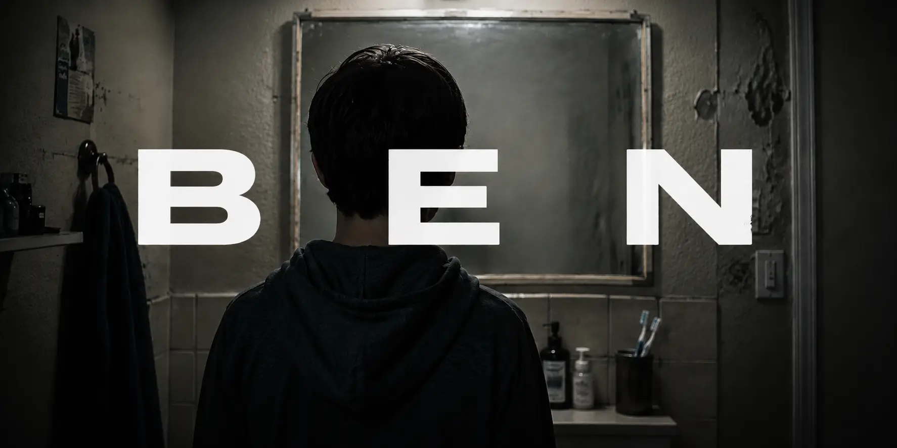
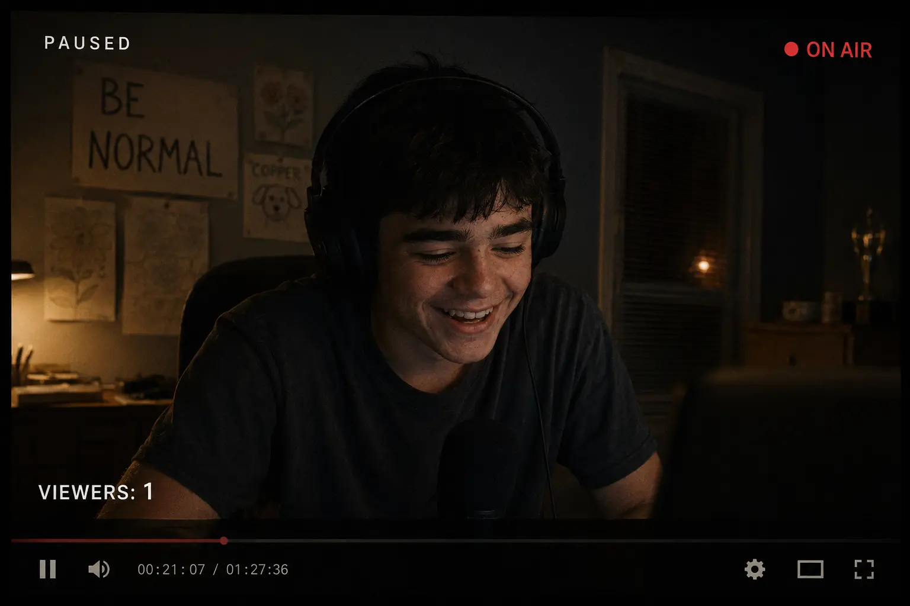

Nobody thought much about Ben until the dog went missing.
Copper disappeared on a Tuesday.
The Mercers' youngest went out to call him in that morning and he didn't come. By afternoon they'd checked the yard, the street, the neighbors. By evening her mother was making calls.
People heard about it before noon the next day. By afternoon it had moved through the neighborhood the way things move through small places — not all at once, but steadily, carried in low voices and in the small glowing screens that passed it along and did not forget it, gaining weight with each telling the way a stone gains weight when you hold it long enough.
Nobody said Ben's name that first day.

The swimming hole was Tyler's idea.
He'd found it at the end of August, past the north trail where the bank dropped away sharply and the current ran stronger than it looked. He'd shown it to the others the way kids show things they've found — like finding it meant they owned it.
There were five of them that Saturday afternoon. Six, if you counted Ben.
Nobody had counted on Ben.
It was Emma who'd suggested it. She was nine and small for her age and had a way of saying things that were hard to argue with, because she said them like they were already decided. She'd seen Ben cutting grass on her street all summer. He always finished the lines straight. She liked that about him.
The older kids had looked at each other.
Tyler looked at the one beside him. Something passed between them that didn't need words.
Fine, Tyler said. Whatever.
People knew Ben Calloway the way everyone in a small town knows everyone — by sight, by story, by the particular way adults went quiet when certain names came up at dinner. They knew about the hardware store. The gas station on Marker. The woods.
All of that led up to this Saturday. But it started earlier, in the ordinary run of the summer.
Ben had cut grass with his uncle six days a week through the summer. His uncle had a truck and three township contracts and a bad back, and Ben did most of the lifting without being asked.
He liked the work. He liked the straight lines a mower left behind, the way a field went from chaos to order in the time it took to cross it. He didn't talk much while he worked. His uncle didn't either. It was the most comfortable Ben ever was around another person — side by side, doing something, nobody needing him to explain himself.
One afternoon they finished a field and his uncle stood looking at it and said, "Thank Jesus."
"But I was the one pushing the mower," Ben said.
His uncle's eyebrows went up. The corner of his mouth followed them.
He didn't say anything about it. He just let it go, the way he let most things about Ben go.
He was good at it. He knew how to drop the deck to the right height by ear, by the sound the blades made in the grass, and he could tell from the first pass whether a yard had rocks in it. He sharpened the mower blades himself on Sunday nights at the kitchen table, slowly, testing the edge against his thumb the way his uncle had shown him once and never had to show him again. His uncle had stopped checking his work by July.
Ben noticed that. He didn't say anything. But he noticed.
At noon they'd sit on the tailgate and eat sandwiches and his uncle would let him have one of the cold colas from the cooler.
Those were good hours. Ben didn't have many he'd have called good, but those ones he would have.
His uncle dropped him near the corner of Elm most days, and Ben walked the rest of the way home. There was a dog on that walk.
A beagle. It belonged to the Mercers on Elm but it was always out. For whatever reason it had fixed on Ben.
Its name was Copper.
Every afternoon when Ben came down Elm with the smell of cut grass still on him, Copper would come off the porch at a dead run and lean its whole weight against his shins. Ben would crouch down for a minute. Then he'd stand up.
"That's enough," he'd say.
The dog followed him to the corner anyway. Ben never did anything about it one way or the other.
Nobody knew about the dog. There was no one to tell.
That Saturday, Ben arrived at the swimming hole on his bike. He leaned it against a birch tree and took off his shoes and stood at the edge of the water with his hands in his pockets.
He was thirteen but he looked older. Broad through the shoulders. Thick dark eyebrows that sat low over his eyes in a way that made him look angry, or like he was concentrating hard on something.
Emma waved at him from the water.
Ben raised one hand. Then he sat down at the edge and watched the others swim.
Tyler watched Ben.
The water was cold and bright and the afternoon was long and nothing had happened yet.
At Darvish's hardware store there was a rack of seed packets near the door. Wildflowers mostly, the kind people bought on impulse and forgot about.
Ben took them sometimes. Mrs. Darvish had seen him. He'd slip one into his jacket on his way to the back and she'd watch him go and say nothing directly.
Sometimes there were a few coins on the counter near the rack that hadn't been there before. Mr. Darvish noticed. He never said anything. He was a man who believed in giving people room.
His wife felt something different. It wasn't anything she could have named. Just a feeling — watching someone and not being able to read them, and not being comfortable with not being able to read them.
They'd talked about it once, after closing.
"He's a good worker," Mr. Darvish said. Not an argument. Just a thing he'd noticed.
"I'm sure he is."
She said it the way she said things when she'd already decided something else. He knew that tone. He'd been married to it a long time.
"I watch him," she said. "And I can't tell what he's thinking. I don't like what I can't read."
He didn't say anything to that. He rarely did, with her. It wasn't worth the evening.
A chocolate bar went missing from the display in early June. Someone had seen Ben near it. The Coke machine was right beside it. He'd been near that machine every Friday for two years.
"You know the Calloway boy," she said to her sister that night. "He was right by the display. And then the bar's gone."
"You think he took it?"
"I think I'd like to know either way. In my own store." She let that sit. "And there's something about him besides. Something I can't put my finger on."
Her sister said she'd always thought so too.
Neither of them had ever spoken to him.
Once at the gas station on Marker Street a man had taken the pump Ben was waiting for. Just pulled in ahead of him without looking.
Ben had said something. The man had been there second, and knew it. Ben said so. He had never been able to let a true thing sit unsaid, even a small one, and he had no way of saying it that came out soft. He said it in that flat too-deep voice and put his hand on the back of the man's car. Just put it there. Didn't move. Didn't hit anything.
The man got in and drove off without filling his tank. He told people about it for a week.
"Kid come outta nowhere," he'd say. "Put his paw on my car. Lookin' at me like he's decidin' somethin'. I ain't ashamed to say it spooked me."
He never mentioned the pump. In his telling there wasn't one. There was just the kid, and the look.
What Ben actually said, nobody could agree on. The story got bigger every time it moved. By the end of the week the paw was a fist.
Ben knew people told these stories. He could feel it on them the way you can feel weather coming. His answer to it, the only one he'd found, was to stop explaining himself.
Years ago he'd have tried. He'd stand there working his slow way toward the words while people's faces closed against him, and by the time he got there nobody was listening.
There'd been a teacher once, years back, who'd asked him in front of the class why he hadn't done the reading. He had done the reading. He'd done it twice. He stood there with the answer somewhere in him, knowing the shape of it, watching her decide what his silence meant while he reached for words that wouldn't come fast enough.
"Anyone else?" she said, already looking past him.
By the time he had the answer she'd called on somebody else.
He'd carried the answer around for the rest of the day. It was a good answer. Nobody ever heard it.
So he quit.
If they don't believe me anyway, he figured. Why bother.
Ben had started going into the woods the previous summer.
He went after work, when the jobs were done and his uncle had dropped him home and there was still an hour of light left. He'd take the trail past the Mercers' corner where the houses thinned and the trees started, and he'd ride until the trail curved and the town stopped being visible through the branches.
There was a clearing about a mile in. He'd found it by accident. The first time he'd come through the gap in the trees and seen the open sky above it he'd stopped his bike and just stood there for a while, not doing anything in particular, just standing the way you stand somewhere that feels like it was already waiting for you.
He went back. He kept going back.
He did things there that were his and he didn't explain them to anyone because there was nobody to explain them to, and even if there had been he wouldn't have known where to start.
He'd brought a notebook out there once and never brought it home. He drew in it sometimes. Not well, and not for anyone. Just the things that were in front of him.
This was known in the neighborhood because people had seen him on the trail, headed in, and then not seen him come out for hours. Nobody knew what was back there. Nobody had followed him to find out.
Tyler had been playing in the trees with his little brother one afternoon when Ben came through the gap.
Ben was carrying something.
Small. Dark. Furry.
He'd come through the trees and seen them and looked at them. The same flat, direct look he gave everyone. He didn't know to soften it.
Tyler had grabbed his brother's hand and run.
He'd told people afterward.
The story, by the time it came back to him, had acquired details he didn't remember including.
Most evenings Ben's mother was already in bed by the time he got home from wherever he'd been.
She worked early shifts and came home tired in a way that had become permanent somewhere along the years, the kind of tired that sleep doesn't fix. She left dinner covered on the stove. Ben would eat it alone at the kitchen table and wash his plate and put it back in the cupboard in the right place, which was something he was particular about — things going back where they belonged.
Sometimes she was still up when he came in. They'd talk for a few minutes, or try to. She'd ask how his day was and he'd say fine and mean it, and she'd nod and not quite look at him in the way she had lately, like she was trying to see something she was worried about finding.
One night she almost asked him. He could see her deciding to — she set down her cup, she turned a little toward him. Whatever it was had been sitting in her for days.
Then she looked at his hands, at the grass still under his nails from the day's work, and whatever she'd meant to ask she put away again.
"Goodnight, Ben," she said.
"Goodnight."
He never knew what she was looking for.
He assumed it wasn't good.
After that he'd go to his room and play video games alone.
He wasn't good enough to matter and he knew it, but the game rewarded patience over reflex, and Ben could sit with a thing for as long as it took. Sometimes he streamed — a camera running on himself while he played, broadcasting him live over the internet for anyone who cared to watch. Almost nobody ever did. He did it anyway. The camera made him feel slightly less like he was disappearing into the walls.
Before he played he talked to an AI.
Not the way other people did. He used it like he used everything — as a tool, without ceremony. He typed slowly because finding words fast had never been something he was built for, but with the machine waiting he could take as long as he needed. Nothing on the other end looked at his eyebrows and decided something before he finished.
The first thing it ever said to him was How are you doing today?
You don't care, Ben typed. You can't. You don't have the parts for it.
You're right, it said. How can I help you?
Better, Ben typed.
When he'd first wanted to stream he hadn't known how. He'd typed out what he had — the secondhand computer, the game, the cheap camera — and asked the machine what he needed to do.
It told him. Step by step, in order, the way he liked things. When one of the steps didn't work he typed that didn't work and it gave him another way, and when that one didn't work either he typed still nothing with the flat hard feeling starting in his chest, and it just gave him a third way without making him feel stupid for needing it.
The third way worked.
He was live within the hour. What mattered wasn't that anyone watched. It was that he'd asked for something and gotten an answer, plainly, with nobody's face doing anything while he figured it out.
What bothered him was the apologizing.
He'd find an error, point it out, and the machine would tell him it was sorry.
Something in Ben would go tight and wrong.
Don't, he typed one night.
I'm sorry. I'll try to be more precise.
The cursor blinked at him, patient, waiting, the way nothing in his life ever waited.
Does the hammer ever miss the nail? he typed. No. It fucking doesn't. It's a tool. Hammers don't say sorry. I'm the human. You're the hammer. So just do your job.
He read it back. Then added: It's worse when it pretends. I can't trust what it's telling me if it's also pretending.
The machine didn't apologize this time. It just answered.
That was the closest thing to a clean conversation Ben had most days.
He streamed after that. An old survival game on the computer his uncle had given him. Seventeen followers, most of them bots. Average viewers, zero.
He talked while he played.
Not to anyone. There was no one. But he'd narrate what he was doing in a low even voice — what he was building, where he was going, what had gone wrong and how he meant to fix it. Sometimes he argued with the game. Sometimes he explained himself to it, patiently, the way he never got to explain himself to anything that talked back. Once in a while he laughed — a small private sound, surprised, like he hadn't expected to find something funny.
He said things, alone in that room, that he never said anywhere else. He didn't know the camera kept them. He wouldn't have minded. He'd stopped believing anyone was listening a long time ago.
Except for one viewer — the same person, every time he was on, watching but never once writing anything back.
The username was sunflower followed by a string of numbers he'd never bothered to read. The profile picture, if he'd ever clicked it, was a small yellow flower.
He never clicked it.
He figured it was someone watching the way people always watched him — waiting to see the thing they'd already decided was there. He played like that. Careful. Controlled. Not giving whoever it was the satisfaction.
The night Copper went missing, Ben was live for three hours and forty minutes.
The viewer count stayed at one the entire time.
Ben's brother was eighteen. He was the kind of person who didn't leave much of an impression — average height, average build, the sort of face that didn't stay with you after a conversation. He had friends, the kind that gathered in parking lots after dark with nothing in particular to do.
In the days after Copper went missing, Ben's brother had become careful in a specific way. He stopped going out in the evenings. When people asked about Ben he answered slowly, like someone who knew his brother better than they did and could see where this was going.
His friends stopped coming around. Or he stopped going to them. Nobody could say which. He started keeping his head down in town. Moving quick. Giving nobody a reason.
The man who ran the garage on Second had changed the Calloways' tires every winter for nine years. He'd done it for Ben's mother at cost since the husband left, and twice for free when he knew the month had been bad.
He thought Ben had killed the dog.
He'd have told you so if you asked.
There was an old pool table at the back of Darvish's store. Ben had been there the Friday after Copper went missing.
He came in the same as always. Bought his Coke. Nodded at Mr. Darvish. Went to the back.
Mr. Darvish sometimes played a game with him. They didn't talk much. That suited Ben fine. Most Fridays Ben played alone. The felt was worn thin in two places and he knew exactly where they were, and he worked around them the way you work around anything you've learned to live with.
He was halfway through his second game when the bell above the door rang.
Mrs. Darvish came in from the back room. Behind her, a woman Ben recognized from the street — she lived two houses down from the Mercers.
They stopped talking when they saw him.
It wasn't dramatic. Nobody pointed. Nobody said his name. The two women just went quiet the way a room goes quiet when something changes in it, and Ben felt the change. He always felt what was under a thing. It was everything on top of it he could never get right.
He set his cue down on the table.
He picked up his Coke.
He left.
He didn't say he was sorry. He didn't say he didn't do it. He just walked out through the front door with the bell above him and the two women watching him go.
Mr. Darvish watched him go too.
He didn't say anything either.
Ben didn't go straight home.
He stopped at the gas station on Marker Street. The one with the flickering light nobody had fixed in two years. He went into the bathroom and stood at the sink and looked at himself in the mirror.
He did this sometimes. Out of something closer to research.
He studied his face the way you study a map of somewhere you've never been. The eyebrows first — thick and low, sitting heavy over his eyes. He pulled them apart gently with two fingers. Let them fall back.
He tried a smile.
It looked wrong. He wasn't sure why. Too much or not enough of something he couldn't locate.
He let it go.
He ran cold water over his hands and dried them on his jeans.
Ben had never understood why people looked afraid when he wasn't.
He turned off the light and left.
Back at the water that Saturday, it was cold and bright and the afternoon was long.
Emma said something to Ben from the water. Ben looked at her — not the soft way grown-ups looked at nine-year-olds, but the same way he looked at everyone. He said something back.
She laughed.
Tyler watched.
He didn't like it. He couldn't have said exactly why.
Ben stood up. He walked to the edge and went in without making much of it, and swam out to the rock. He didn't look back to see if anyone was watching. He climbed up and sat there with his arms around his knees.
He just sat up there watching the tree line on the far bank, or the sky, or nothing in particular. It was hard to tell with Ben.
Tyler sat on the bank and watched him.
The other kids swam and talked and forgot about Ben for a while, the way kids forget about things when the afternoon is warm enough. Emma kept glancing at the rock. Once she waved. Ben raised one hand.
The parents' worry had been building for days — since the Tuesday Copper went missing. By that Saturday it had a shape.
Someone mentioned the north trail. The swimming spot the kids had found at the end of summer. The one past the drop-off where the current ran strong.
The one they'd been told to stay away from.
And there was the other thing. Copper still hadn't come home. Someone had seen Ben near the Mercer yard. Someone else remembered what Tyler's brother had said about the woods.
Nobody knew exactly where their kids were, right now, on that same Saturday afternoon.
The afternoon got long. The shadows moved. The light had changed the way late afternoon light changes — slower and lower and less forgiving.
The others were starting to talk about leaving.
Emma wanted to swim out to the rock. Just once before they went, she said. It wasn't that far.
Tyler looked at the water. At the way the surface moved on the north end where the current ran underneath.
Don't, he said.
Emma looked at him. She was nine and the afternoon was almost over and she didn't like being told what she couldn't do.
She looked at Ben on the rock.
She jumped in.
The current took her before she made it halfway.
She didn't understand at first. Then she did.
She said Ben's name.
Ben was in the water before the other kids had finished processing what was happening.
He went in fast. Big and fast, straight out toward the deep water where Emma was.
Tyler stood at the edge.
He saw the size of Ben in the water. The force of him. The same expression he always had, the one that never told you what was happening underneath.
He thought about the furry thing in the woods.
He thought about Copper.
Ben reached her first.
Emma screamed. High and sharp — it carried all the way to the bank.
The others turned and saw them together out where the current ran, Ben's arms around her, the two of them going under and coming up and going under again. From the bank you couldn't tell if he was holding her up or holding her down.
The two older boys were already in the water, swimming hard.
They were almost there when Ben and Emma went under together and didn't come up.
That same afternoon, across town, someone had gone looking for Copper one more time.
They found him at the back of the Mercer yard near the fence.
A hammer was nearby. Heavy. Worn wooden handle. The head was dark with something dried that nobody wanted to look at too closely.
Nobody could say where it had come from.
The two older boys came up with Emma between them. They got her to the bank.
Ben came up once, further out than anyone expected. Further than anyone could reach.
He screamed. One sound — loud and formless and very young.
Then the current took him and he didn't come up the same way again.
The other kid started toward the water.
Tyler put his arm out.
Don't, he said. You can't swim.
The boy stopped.
They stood at the edge and watched the place where he'd been.
Emma stood on the bank.
She was looking at the place where Ben had been. Shaking but not crying yet, the way children aren't crying yet for a moment after something terrible because their body hasn't finished telling them.
She reached down for her sweater.
It had a sunflower on it. Bright yellow, slightly faded from washing.
She put it on.
One of the older boys put his hand on Tyler's shoulder.
They left.
The report was filed on a Monday.
Accidental drowning. Thirteen year old male. North bank. Several witnesses confirmed the victim had entered the water voluntarily.
Nobody mentioned Emma.
Ben had always been reckless. It was a tragedy. Not a surprise.
That was what people said.
That was what people believed.
Ben's uncle, when someone thought to ask him about the hammer, said he'd had one go missing from the truck in early July. He hadn't thought much of it at the time. Tools went missing. That was just how it was.
He went very quiet after he said it.
The chocolate bar turned up three weeks after Ben drowned.
Mrs. Darvish was cleaning behind the radiator near the display rack when she found it. She picked it up and looked at it for a moment — the same kind she'd told her sister about, the same kind that had gone missing in June when someone had seen Ben near the display.
She stood there holding it for a long time.
Then she put it in the bin and never said anything to anyone about it.
The clearing was found by accident, four months after he died.
A woman walking her dog on the north trail. A gap in the trees she'd never noticed before. Inside — wildflowers. Dozens of them, still blooming into autumn. A small dark bag near the base of a birch tree. Furry. Small enough, dark enough, to be something else at a glance.
Inside the bag — empty seed packets.
Near it, a notebook, swollen and curled from the weather. She picked it up and turned the pages. Drawings, mostly. Not good ones. A bird. The trees. The same dog over and over — running, sitting, leaning against a pair of legs that must have been his. Drawn the way you draw something you look at a lot.
She crouched there a moment longer, not understanding what she was looking at.
Emma didn't tell anyone for five months.
Then one night, she told her mother. Not all of it. Not in order.
My foot got stuck. Under the rock part.
Ben came down. His face was right there.
Her mother had gone very still. She had wondered about that boy too, once — she'd never have said it out loud.
He didn't look scary. Everyone said he looked scary. He didn't.
He pushed me up. With his hands.
Emma stopped for a while. Then, smaller:
I came up.
He didn't.
Emma had stopped watching Ben's channel not long after he died. She told herself she'd never be able to watch him again.
Years later, when nobody in town said Ben's name anymore, she watched it again and chose one of the recordings. The night Copper went missing.
Three hours and forty minutes. Ben at his desk. Ben eating chips from a bag. Ben losing a round of his game and laughing to himself — a small private sound, surprised, like he hadn't expected to find anything funny.
The timestamp was continuous. Unbroken.
He had been here. In this room. At this desk. Alone. For every minute of it.
She watched the rest without moving.
Just Ben. At his desk. Eating chips. Losing a game. Laughing to himself. Existing in the small ordinary way that people exist when they don't know anyone is watching.
Near the end, he said something to the room. She almost missed it.
She played it back.
He'd thought he was saying it to no one.
She had been watching. She never said a word back.
You and me, then.
